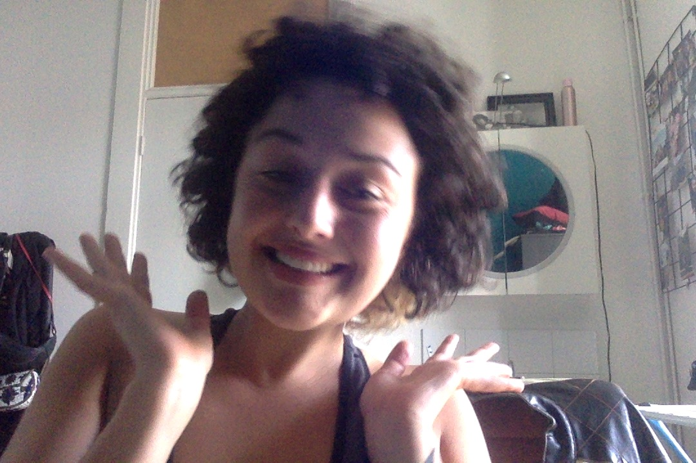
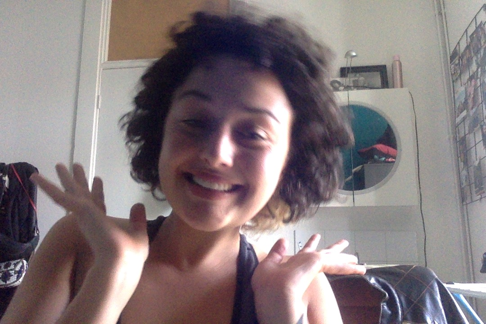

Hi! My name is Noam Rubin. It comes from נעים / na-iem, which means pleasant in Hebrew.

I am a Dutch- Israeli web developer with a background in neuroscience, currently living in Berlin. In 2018, I graduated from the University of Amsterdam. Lacking a form of creative expression, I undertook a Computer Science minor collaborated between the University of Amsterdam and Harvard University. This was the first time I was introduced to the world of code. The immediate feedback, analytical challenge and immense creative potential got me HOOKED. In October 2020 I participated in a full stack web development bootcamp held by Ironhack Berlin to upgrade my skills.
As a creative person, I cherish how coding gives me boundless possibilities, knowing that only my imagination is the limit. Now that I have found my medium for creative expression, I am able to bring my own ideas into tangible form and integrate my various areas of interest in innovative ways. It makes me feel passionate, motivated and free.
I have always been interested in emotions, the human psyche and the transformations that we are experiencing through our lives. This, several travels around the world and different congresses triggered me to find my passion for personal development. This shapes my future ambition of working as an artist in the field of transformative technology in which technology is used to foster mental and emotional wellbeing.
*** Please feel free to reach out to me if you are interested in my projects, looking for a collaboration or want to exchange ideas ;) ***

I am a Dutch- Israeli web developer with a background in neuroscience, currently living in Berlin. In 2018, I graduated from the University of Amsterdam. Lacking a form of creative expression, I undertook a Computer Science minor collaborated between the University of Amsterdam and Harvard University. This was the first time I was introduced to the world of code. The immediate feedback, analytical challenge and immense creative potential got me HOOKED. In October 2020 I participated in a full stack web development bootcamp held by Ironhack Berlin to upgrade my skills.
As a creative person, I cherish how coding gives me boundless possibilities, knowing that only my imagination is the limit. Now that I have found my medium for creative expression, I am able to bring my own ideas into tangible form and integrate my various areas of interest in innovative ways. It makes me feel passionate, motivated and free.
I have always been interested in emotions, the human psyche and the transformations that we are experiencing through our lives. This, several travels around the world and different congresses triggered me to find my passion for personal development. This shapes my future ambition of working as an artist in the field of transformative technology in which technology is used to foster mental and emotional wellbeing.
*** Please feel free to reach out to me if you are interested in my projects, looking for a collaboration or want to exchange ideas ;) ***